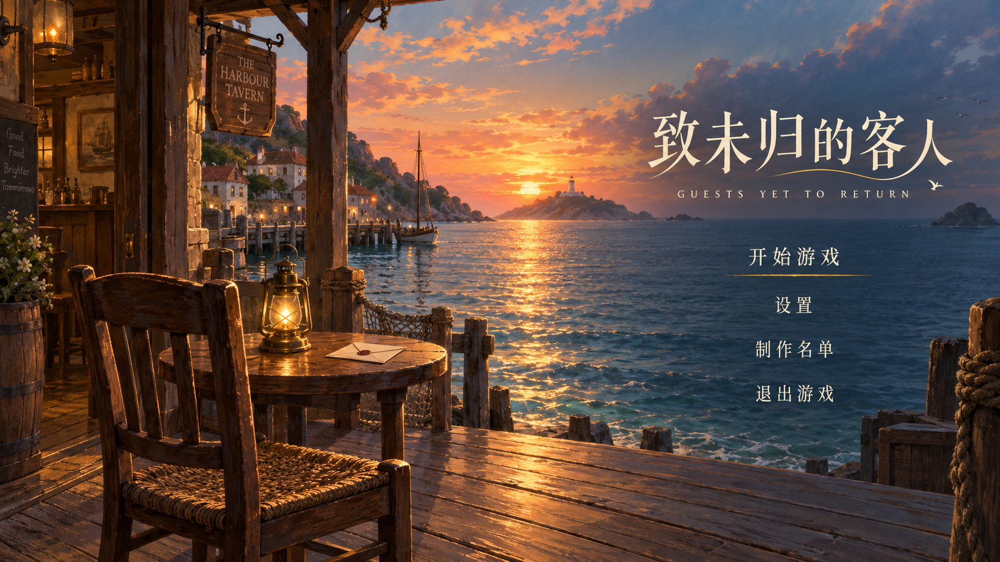

B · 留一盏灯
站在酒馆门前看海。空椅、信和灯呼应开篇故事，让“未归”成为画面里可以感受到的等待。
点击试听后播放，初始静音。
动态小样：局部潮光与灯光叠加；完整海浪、云层与船的运动待分层制作。画面内菜单为静态排版概念，使用上方和下方工具浏览。
配乐优先候选：Laura / kaazoom，引用项目已有木吉他曲；海浪为实时合成音色。你喜欢的同一首 MP3 已在下方单独提供，未混入潮声。
开始界面概念 · 2026.10.16 · 独立预览，不读写游戏存档

站在酒馆门前看海。空椅、信和灯呼应开篇故事，让“未归”成为画面里可以感受到的等待。
点击试听后播放，初始静音。
动态小样：局部潮光与灯光叠加；完整海浪、云层与船的运动待分层制作。画面内菜单为静态排版概念，使用上方和下方工具浏览。
配乐优先候选：Laura / kaazoom，引用项目已有木吉他曲；海浪为实时合成音色。你喜欢的同一首 MP3 已在下方单独提供，未混入潮声。